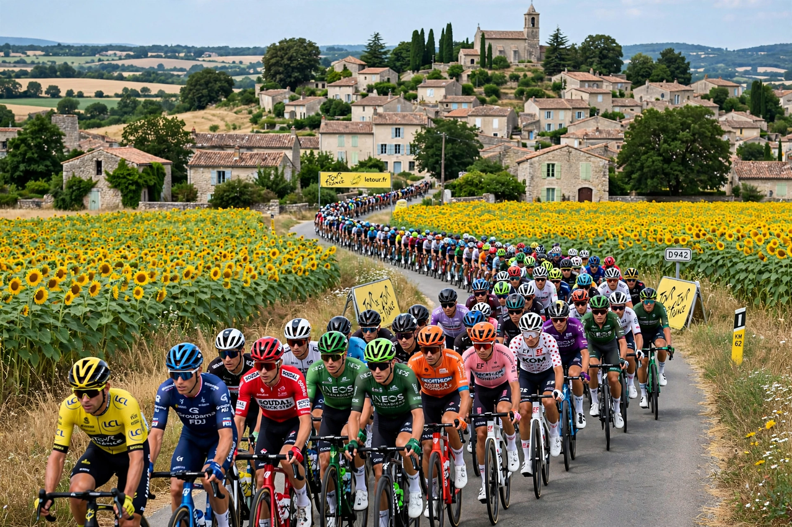

Tour de France
From Wikipedia, the free encyclopedia

[Image: The Tour de France peloton racing through the French countryside]The Tour de France peloton racing through the French countryside
The Tour de France is an annual men's multiple-stage bicycle race held primarily in France, first organised in 1903 to boost the circulation of the newspaper L'Auto. It is the oldest, most prestigious and most-watched of cycling's three Grand Tours (with the Giro d'Italia and Vuelta a España) and one of the world's great annual sporting events.
The race
The Tour runs over 21 stages across 23 days in July — flat sprints, time trials and brutal mountain stages in the Alps and Pyrenees — totalling roughly 3,400 km and finishing traditionally on the Champs-Élysées in Paris. Riders compete in teams of eight, supporting a designated leader. The leader wears the yellow jersey (maillot jaune, introduced 1919); other jerseys honour the points leader (green), best climber (polka dot) and best young rider (white).
History and champions
Four riders have won five Tours each: Jacques Anquetil, Eddy Merckx, Bernard Hinault and Miguel Indurain. Lance Armstrong's seven consecutive titles (1999–2005) were stripped in 2012 after a USADA investigation exposed systematic doping — the darkest chapter in a sport long shadowed by drugs, from amphetamines to the EPO era. Recent Tours have been defined by the rivalry of Tadej Pogačar and Jonas Vingegaard. A women's race, the Tour de France Femmes, was established in 2022. The Tour's scale as a national festival rivals events such as the Super Bowl in its home country.